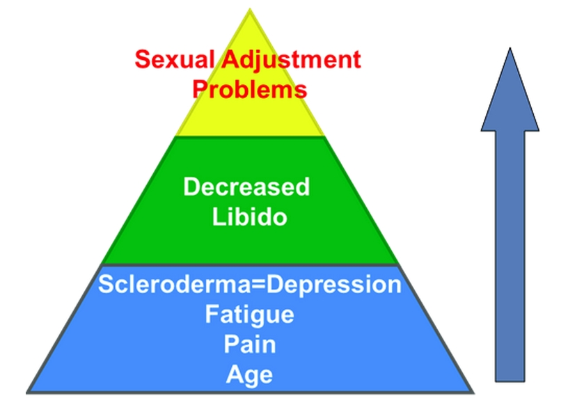

Module: Sexuality and Scleroderma
Elaine A Furst, BSN, MA
The physical difficulties that people with scleroderma often have are listed below. None of these symptoms are pleasant, some can be life threatening, and all can get in the way of sexual desire, sensuality, or enjoyment of life, as well as the sexual act.
Physical difficulties:
- Stiff skin
- Hands
- Digital ulcers
- Dry mouth/small mouth opening, dry vagina
- Joint pain, joint stiffness
- Fatigue
- Pain
- Fibromyalgia
- Reflux
- Problems getting and maintaining an erection
Since the average age of women with scleroderma is within the range of menopause (40-60 years), some of the symptoms are the same.
Both menopause and scleroderma have dryness of the mouth and other mucosa, such as the vagina, as some of the main symptoms. In addition, some people with scleroderma have Sjögren’s syndrome, which is an autoimmune disease that affects the tear- and saliva-producing glands and the mucous-secreting glands of the vagina. This may cause feelings of dryness of the eyes, mouth, and vagina.
Menopause and scleroderma often have psychological symptoms caused by depression and fatigue, resulting in loss of libido or decreased sexual drive.
| Menopause | Scleroderma |
|---|---|
| Increasing oral and vaginal dryness | Vaginal dryness; Sjögren’s syndrome |
| Mood swings, depression, fatigue, loss of libido | Depression, fatigue, loss of libido |
| Hot flashes, night sweats, stress increases symptoms | Need hot flashes! Stress increases Raynauds |
| Dress in layers to progressively cool off | Dress in layers to progressively warm up |
In both menopause and scleroderma, stress increases symptoms of all kinds, including hot flashes and night sweats. This is also true in scleroderma. In addition, stress also increases Raynaud’s, so maybe hot flashes might not be a bad thing! During menopause, woman often dress in layers that can be removed to cool off during a hot flash, while women with scleroderma may need to dress in layers to progressively warm up.
This chart shows some of the medications used by people with scleroderma. It shows the side effects that might interfere with sexual enjoyment. Side effects of medications often prescribed for scleroderma can inhibit sexual arousal, impair vaginal lubrication and increase dryness, decrease desire, and cause erection problems in men with scleroderma.
| Medications | Side Effects |
|---|---|
|
SSRI anti-depressants: Prozac, Paxil, Zoloft, Celexa Tri-cyclics: Elavil Wellbutrin causes fewer problems butdoes cause |
|
|
NSAIDS: ibuprofen, naproxen, aspirin Cimetidine in large doses |
|
|
Steroids such as prednisone Birth control pills and other estrogen-based medications |
|
|
Narcotics, such as codeine, morphine,etc. Beta-blockers and calcium channelblockers (for hypertension and Raynaud’s) |
|
There may be other medications you can use that don’t have these side effects, or have milder side effects. In addition, there may be medications that reduce the severity of your side effects. Talk to your doctor about the problems you’re having and ask if there are other medications that might help.
Sex and Scleroderma Diagram
The diagram shows that scleroderma and its physical and emotional effects can result in decreased desire and, ultimately, problems enjoying sex, even in a loving, supportive relationship.
Menopause alone can result in this “Terrible Triangle”; when added to scleroderma, it can be a double whammy for women and their partners.